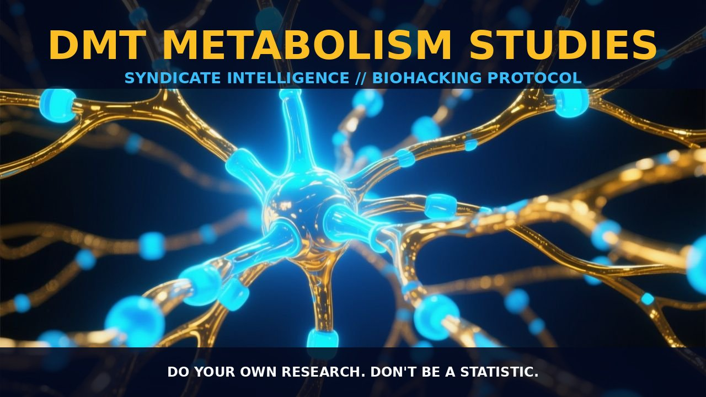

DMT Metabolism and Its Neurobiological Impact

1. The Mechanism
DMT, or N,N-dimethyltryptamine, is an endogenous hallucinogen with a rapid metabolism and clearance within the body. Its primary route of metabolism involves monoamine oxidase A (MAO-A), which breaks down DMT into indoleacetic acid (IAA), also known as auxin. A study by Kaplan et al. (1974) found that only 0.16% of an intramuscular dose of DMT was recovered as the parent compound after a 24-hour urine collection. This process is rapid and efficient, with the majority of the administered dose being converted to IAA and DMT-N-oxide, the second most abundant metabolite.
The biosynthesis of DMT involves the methylation of tryptamine by the enzyme indolethylamine N-methyltransferase (INMT). This process occurs in various tissues, including the brain, where DMT can be synthesized from tryptamine and N-methyltryptamine (NMT). INMT uses S-adenosyl-methionine (SAM) as the methyl source, and this enzymatic activity has been observed in several mammalian species, indicating a widespread presence of DMT biosynthesis across different organisms.
The localization of INMT and aromatic amino acid decarboxylase (AADC) enzymes in discrete brain areas suggests that DMT is likely synthesized and stored in specific regions of the brain, particularly in the pineal gland and other neuroanatomical sites.
2. Biological Leverage
The rapid metabolism of DMT presents significant biological leverage in understanding its role as a neurotransmitter and neuroregulatory substance. Given its short half-life, DMT's effects are transient and localized, making it an ideal candidate for studying the dynamics of neurotransmitter release and uptake. DMT binds to specific high-affinity receptors, such as the one identified by Christian et al. (1977) on rat synaptosomal membranes. This binding is sensitive to LSD but not to other monoamine oxidase inhibitors, indicating a unique binding profile that distinguishes DMT from other neurotransmitters.
The rapid metabolism and clearance of DMT suggest that it acts as a transient modulator of neural activity, influencing synaptic function and neuronal communication. The high-affinity binding sites for DMT on synaptosomal membranes imply that it can be stored and released in a regulated manner, similar to other neurotransmitters. This storage and release mechanism allows DMT to act as a neuromodulator, influencing neurotransmitter activity and synaptic function.
3. Tactical Implementation
Understanding the metabolism of DMT is crucial for its practical implementation in biohacking and nootropic applications. Given its rapid metabolism, DMT is most effective when administered via routes that bypass first-pass metabolism, such as intravenous or intramuscular injection, or through smoking. When administered orally, DMT must be co-administered with a monoamine oxidase inhibitor (MAOI) to prevent its rapid degradation in the periphery. This combination allows for a higher concentration of DMT to reach the brain, enhancing its neuroactive effects.
Dosage ranges for DMT typically vary depending on the desired effect and the route of administration. For intravenous or intramuscular injection, doses of 2-4 mg/kg are commonly used, while smoking typically involves doses ranging from 15-40 mg. These doses can produce rapid and intense effects, lasting 15-60 minutes. Timing is also critical, as the rapid metabolism of DMT necessitates precise dosing to achieve the desired effects. Stacking DMT with MAOIs can enhance its bioavailability and prolong its effects, but careful monitoring of heart rate and blood pressure is essential to ensure safety.
Prostar Life Hack
Stack DMT with MAOIs to enhance bioavailability and prolong its effects, but monitor heart rate and blood pressure carefully.
[ AUTHOR: LEAD TECHNICAL RESEARCHER ]